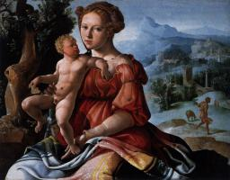
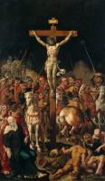
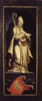
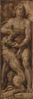
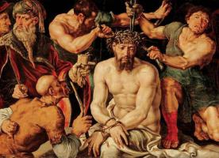
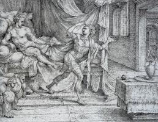

| Людина Скорботи
1525
|
|  | Відпочинок під час втечі до Єгипту
1530
|
 | Гріхопадіння
1530
|
 | Людина Скорботи
1532
|
 | Святий Лука малює Богородицю з немовлям
1532
|
 | Страшний суд
1537
|
") | Розп'яття (триптих)
1538-42
|
|  | Розп'яття
1538-42
|
 | Оплакування Христа
1540-43
|
 | Богородиця і святий Іоанн Євангеліст
1540
|
 | Святий Миколай
1540
|
|  | Святий Миколай
1540
|
 | Розп'яття
1543
|
 | Благовіщення
1546
|
 | Христос увінчаний терновим вінцем
1548
|
|  | Самсон роздирає лева
1550-60
|
 | Святий Лука малює Богородицю
1550-53
|
|  | Христос осміяний і увінчаний терном
1550-55
|
 | пророки Ісая та Єремія
1559-60
|
 | Триптих Поховання
1559-60
|
 | Триптих Ecce Homo
1559-60
|
 | Юдита показує голову Олоферна
1564
|
 | Оплакування померлого Христа
1566
|
|  | Йосип і дружина Потіфара
1566
|
 | Триптих
|